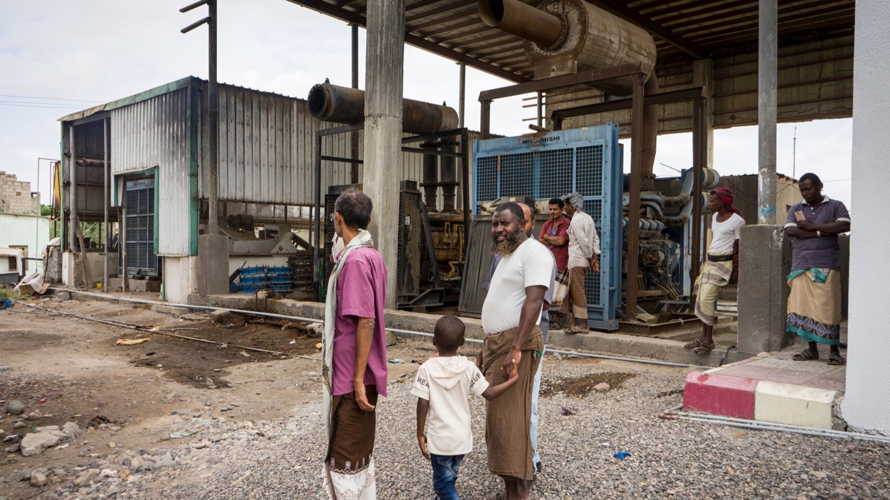
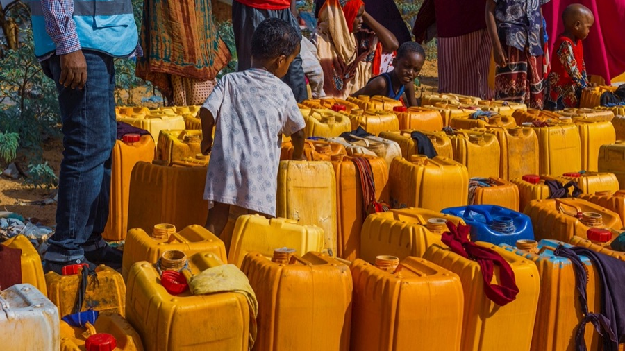
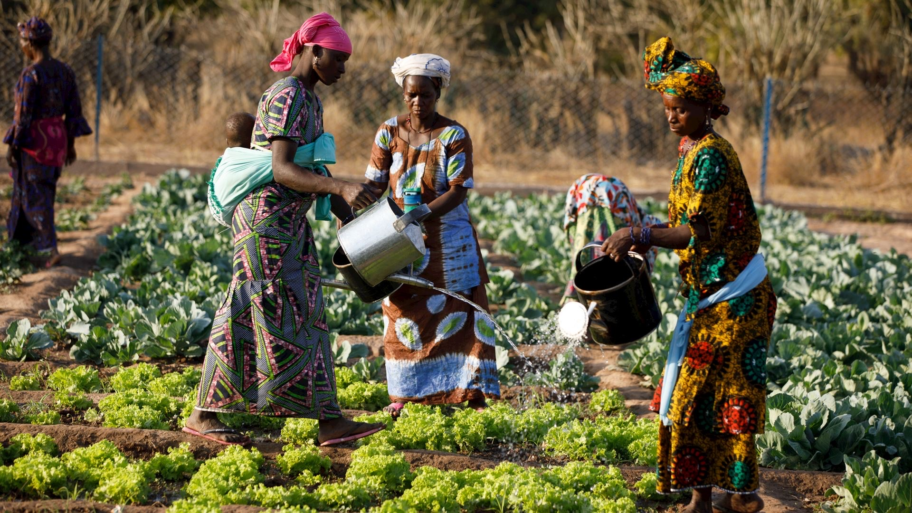

- 3 € : un repas chaud servi le soir même dans une cuisine communautaire
- Éligible à la zakat · reçu fiscal immédiat, 66 % déductible
- Partenaires présents à Gaza depuis 2008
450 000repas chauds servis en 2024
12 000colis alimentaires distribués
3 500kits d'hygiène et d'eau
620orphelins de guerre parrainés
Gaza, Palestine
La situation à Gaza aujourd'hui
Les déplacements se poursuivent entre le nord et le sud de la bande de Gaza. Des familles entières vivent sous des tentes ou dans des écoles transformées en abris, parfois pour la quatrième ou la cinquième fois depuis le début de la guerre. L'accès à l'eau potable reste le besoin le plus urgent : les réseaux sont détruits et l'eau est acheminée par camion. Viennent ensuite la nourriture, les soins pédiatriques et la protection des enfants qui ont perdu leurs parents.
Nos cuisines communautaires de Deir el-Balah et de Khan Younès fonctionnent tous les jours. Notre usine à pain de Gaza a repris la production en juin 2026, après huit mois d'arrêt faute de farine et de carburant. Cette page est mise à jour chaque mois d'après les rapports de nos équipes sur place.

Donner, concrètement
Urgence Gaza
50 € vous coûtent 17 € après réduction d'impôt de 66 %.
Je donne pour GazaÉligible à la zakat · reçu fiscal immédiat · paiement sécurisé
Gaza, Palestine
Comment l'aide entre-t-elle à Gaza ?
C'est la question que l'on nous pose le plus. L'aide entre par les corridors humanitaires, sous le contrôle des Nations unies. Muslim Hands travaille avec le Programme alimentaire mondial (PAM) pour la farine, le pain et les colis, et avec des partenaires palestiniens présents à Gaza depuis 2008 pour les cuisines, l'eau et les soins. Quand des denrées sont disponibles sur les marchés locaux, nous achetons sur place : c'est plus rapide, cela soutient les commerçants et cela évite l'attente aux points de passage.
Collecte en France
Votre don rejoint le fonds Palestine, tracé séparément. Les dons zakat sont fléchés vers les bénéficiaires éligibles.
Achat et acheminement
Farine et colis avec le PAM par les corridors ; achats locaux pour les cuisines quand les marchés sont approvisionnés.
Distribution
Nos partenaires distribuent dans les camps et les abris, avec des listes de bénéficiaires tenues à jour.
Compte rendu
Photos, quantités et factures remontent à Paris et sont publiés dans les actualités et le rapport annuel.

Gaza, Palestine
Ce que fait Muslim Hands sur place
Repas chauds quotidiens
Quatre cuisines communautaires, un repas le soir pour les familles des camps.
Colis et pain
Colis alimentaires et pain avec le Programme alimentaire mondial ; usine à pain relancée en juin 2026.
Eau et hygiène
Eau potable par camion et kits d'hygiène dans les camps de déplacés.
Maternité et pédiatrie
Soins de maternité et consultations pour les enfants avec notre partenaire médical.
Orphelins de guerre
620 enfants parrainés, logés dans leur famille élargie, suivis à l'école et chez le médecin.
Abris
Tentes, bâches et couvertures pour les familles déplacées à l'approche de l'hiver.
Gaza, Palestine
Que finance mon don pour Gaza ?
Les montants ci-dessous sont nos coûts réels d'achat et de distribution, revus chaque trimestre avec nos partenaires.
| Don | Ce qu'il permet | Fiche |
|---|---|---|
| 3 € | Un repas chaud servi dans une cuisine communautaire | Donner |
| 50 € | Un colis alimentaire pour une famille, une semaine | Donner |
| 100 € | Un kit d'hygiène et d'eau pour une famille | Donner |
| 150 € | Un abri d'urgence : tente, bâches, couvertures | Donner |
| 39 € / mois | Le parrainage d'un orphelin de guerre | Parrainer |
Vous ne savez pas quoi choisir ? Le fonds Palestine nous laisse engager votre don là où le besoin est le plus pressant cette semaine.
Gaza, Palestine
Bilan chiffré 2024
En 2024, le fonds Palestine a financé 450 000 repas chauds servis avec le PAM, 12 000 colis alimentaires, 3 500 kits d'hygiène et d'eau, ainsi que le parrainage de 620 orphelins. Les comptes de la campagne sont détaillés dans le rapport annuel. En 2025 et 2026, l'effort s'est déplacé vers l'eau par camion et la relance de l'usine à pain ; le bilan 2025 sera publié en décembre 2026.

« Nous avons tout perdu en une nuit. Le repas chaud du soir, c'est le seul moment où mes enfants sourient. »Hayat, mère de trois enfants, camp de Deir el-Balah, mars 2026
Gaza, Palestine
Nos dernières distributions

Rentrée scolaire sous les tentes : 2 000 kits distribués
Gaza, Palestine
Votre don pour Gaza et vos impôts
Muslim Hands France est une association d'intérêt général : votre don pour Gaza ouvre droit à une réduction d'impôt sur le revenu de 66 %, dans la limite de 20 % du revenu imposable. 50 € vous coûtent 17 €, 300 € vous coûtent 102 €. Le reçu fiscal est envoyé par e-mail immédiatement après le paiement. Votre don peut aussi être votre zakat al maal : il est alors tracé dans le fonds zakat. Tout savoir sur la déduction fiscale.

Gaza, Palestine
Questions fréquentes sur le don pour Gaza
Comment l'aide entre-t-elle à Gaza ?
Par les corridors humanitaires, avec le Programme alimentaire mondial et nos partenaires locaux présents depuis 2008. Nos cuisines communautaires achètent sur place quand c'est possible, ce qui évite l'attente aux points de passage.
Que finance mon don pour Gaza ?
3 € un repas chaud, 50 € un colis alimentaire pour une famille, 100 € un kit d'hygiène et d'eau, 150 € un abri d'urgence, 39 € par mois le parrainage d'un orphelin de guerre.
Mon don pour Gaza est-il déductible des impôts ?
Oui, à 66 % de son montant, dans la limite de 20 % du revenu imposable : 50 € vous coûtent 17 €. Le reçu fiscal est envoyé par e-mail immédiatement.
Puis-je donner ma zakat pour Gaza ?
Oui. Les familles déplacées de Gaza font partie des ayants droit de la zakat. Cochez la case « Zakat » lors du don : il est tracé dans le fonds zakat et distribué uniquement aux bénéficiaires éligibles.
Comment savoir ce que mon don a fait ?
Chaque distribution donne lieu à un compte rendu avec photos dans nos actualités et à un bilan chiffré dans le rapport annuel. Les donateurs mensuels reçoivent un point trimestriel par e-mail.

Un repas chaud, chaque soir.
3 € suffisent pour qu'une famille de Gaza mange ce soir. 100 repas, c'est 300 €, soit 102 € après réduction d'impôt.
Offrir des repas